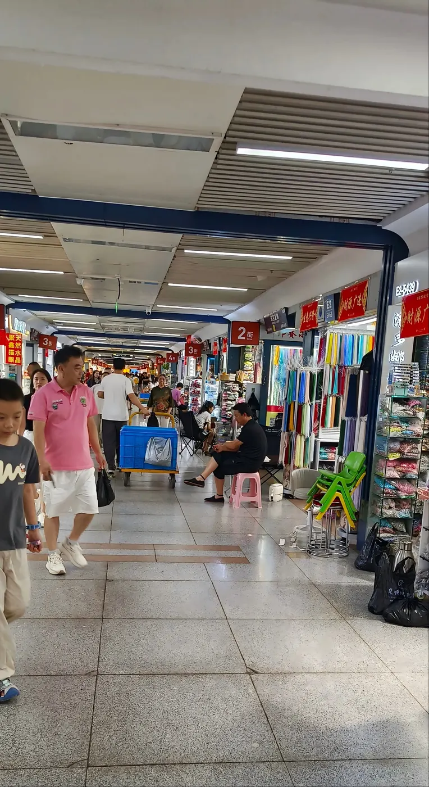
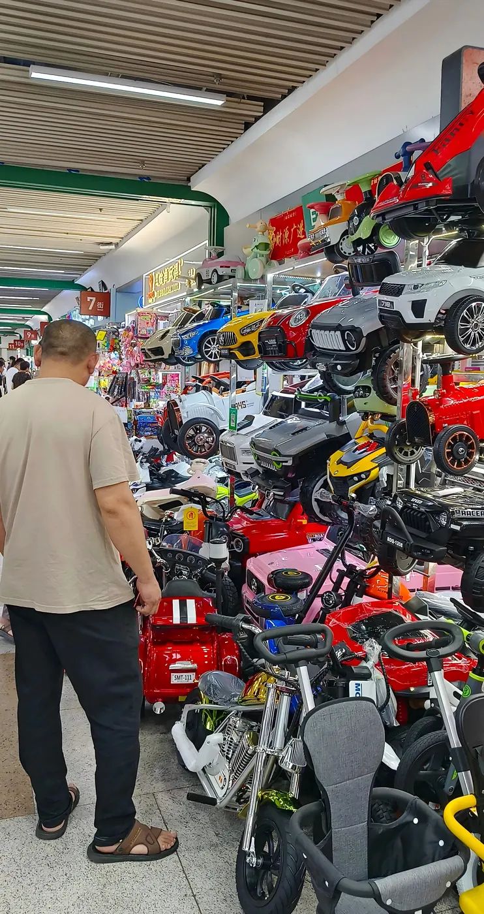
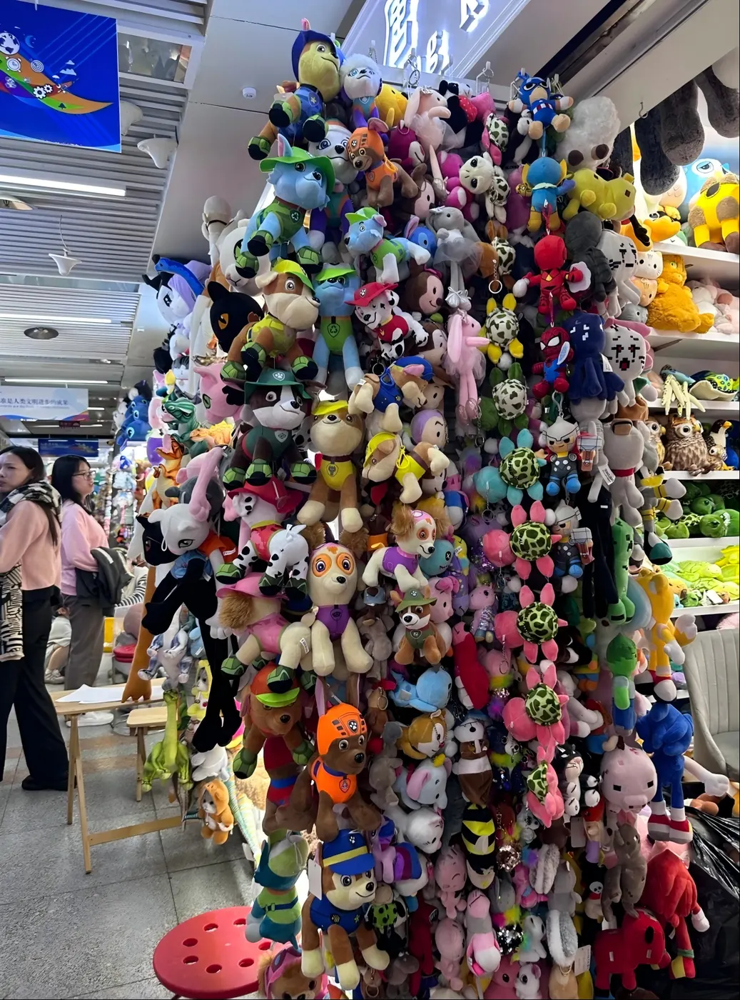
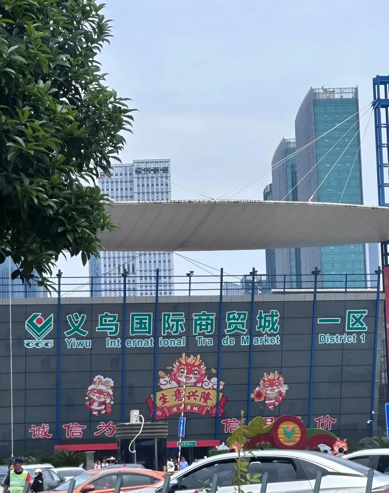
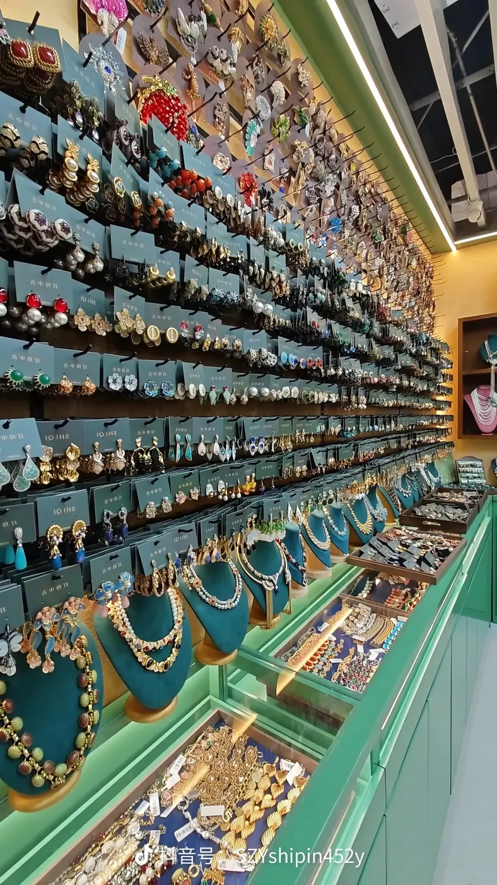
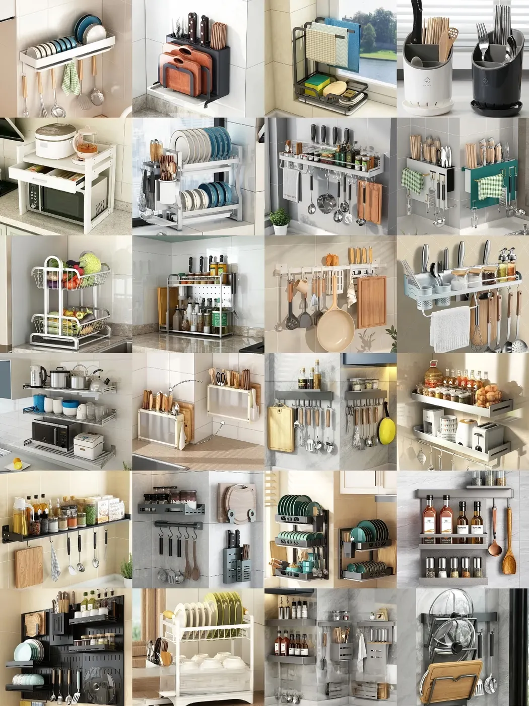

01 / US$29
China Price Re-Check
For buyers who already have a product photo, link, quote, supplier, sourcing agent or trading company offer. We requote and compare reference prices.
Re-check my priceInside the world's largest small-commodity wholesale market
Send one product photo. We'll check real Yiwu supplier options before you travel or place an order.
Fixed service fee. Zero commission. Zero product markup.
Market floor phone shots
The best proof is simple: vertical phone photos from the market, different products, clear notes and supplier details collected for your request.






During a paid scouting task, we can collect phone photos from booths, shelves, packaging samples or supplier displays when they are relevant to your request.
Clear fixed fees. No commission. No product markup.
Our service fee is fixed and agreed upfront. Some sourcing agents and trading companies may offer free product searches, then earn through commission or, more commonly, by adding a margin to the product quote. The slider below uses a common illustrative margin of 10%–15%. Actual pricing varies by provider.
What this means
Pay a fixed fee for local research. If you decide to buy, contact the supplier directly or choose any agent or export-service provider you prefer.
Start from US$59Swipe sideways to compare service models →
Illustration only. Provider pricing and service scope vary. The slider shows an illustrative 10%–15% quote-included margin. The US$59 Quick Product Scout is a research service, not full order management.
Why begin in Yiwu?
Yiwu, China, is home to the world's largest small-commodity wholesale market. We help you explore it remotely before you spend time and money on an initial trip to China.
What we can do
Start with the service that fits your goal. If your request needs a broader scope, we confirm the fixed fee with you before work begins.
01 / US$29
For buyers who already have a product photo, link, quote, supplier, sourcing agent or trading company offer. We requote and compare reference prices.
Re-check my price02 / US$59
For buyers without a clear supplier yet. We search 3 supplier options and organize prices, MOQ, packaging notes and lead-time details.
Start a product scout03 / US$99
Search up to 5 specific products in one category. For each product, receive 2 supplier options, original quotes, contact details, MOQ, lead-time and packaging notes.
Start a 5-product scout04 / FROM US$199
Explore one product category and receive 10–15 selected new product opportunities with photos, price ranges, packaging ideas and source notes.
Request a category scout05 / FROM US$79
Request a focused local task such as additional photos, basic follow-up or sample coordination in Yiwu.
Describe your taskListed prices cover focused entry scopes. The US$29 China Price Re-Check is for buyers who already have a product photo, link, quote, supplier, sourcing agent or trading company offer. It includes requoting and reference price comparison, but not full supplier development. The US$59 Quick Product Scout is for buyers without a clear supplier yet and includes 3 supplier options. Broader requests receive a fixed quote before work begins. The US$99 5-Product Scout covers up to 5 products in one category, with 2 supplier options per product. The US$199 New Product Category Scout starts with 10–15 selected new product opportunities in one category. Third-party shipping, export, warehousing and testing costs are quoted separately when relevant. We do not claim regulated inspection work.
How it works
Start with a free WhatsApp review. We confirm the fixed fee before any paid work begins.
Send a product photo, sourcing goal or practical local task. The initial review is free.
We confirm that the task is feasible, explain what is included and agree the fixed service fee. After payment, we begin the work.
We collect the agreed original supplier quotations, contact details, MOQ, lead times and local photos.
We send the agreed results and the task is complete. Factory visits, production follow-up and shipping support are available as separate paid services.
Private sourcing pack
Receive the agreed research in a structured private pack: original supplier quotations shared unchanged, contact details, MOQ, lead times, local photos, packaging or customization notes and clear next steps.
Three responsive local supplier options compared.
Plus packaging, lead time, exclusions and next steps.
Common questions
No. Our service fee is fixed by task or workload and does not increase with your order value.
No. The original supplier quotations collected for your task are shared unchanged. Third-party costs are shown separately when relevant.
Yes. The paid sourcing pack includes the supplier contact details collected for your task, so you can decide how to proceed.
Yes. When relevant, we can include basic packaging, logo, color or customization notes collected from suppliers. More detailed follow-up is quoted separately.
The US$59 Quick Product Scout covers one specific product with 3 supplier options. The US$99 5-Product Scout covers up to five specific products in one category, with 2 supplier options per product.
The US$199 New Product Category Scout starts with 10–15 selected new product opportunities in one category, with photos, price ranges and source notes.
Yes. Send your requirements through WhatsApp and we will confirm a fixed-fee scope for suitable factory and direct-supply options.
Yes, for the stated entry scope. If your request is broader, we confirm a clear fixed fee through WhatsApp before paid work begins.
Once we send the agreed collected results, that task is complete. Factory visits, production follow-up, shipping support and extra checks are separate paid services.
No. You can begin with local research and review your options remotely before deciding whether a trip is worthwhile.
Yes. Sample coordination, extra photos, supplier follow-up and other local tasks are available as separate fixed-fee services after we confirm feasibility.
Start with a free WhatsApp review
Send a product photo, a short description or your sourcing goal directly in the chat. We will review your request and confirm a clear fixed-fee scope before any paid work begins.
WHATSAPP DIRECT CHAT
Include a product photo or description, your target quantity and any important requirements. We will reply in the same chat.
Chat with us on WhatsAppThis website does not collect or store your request.